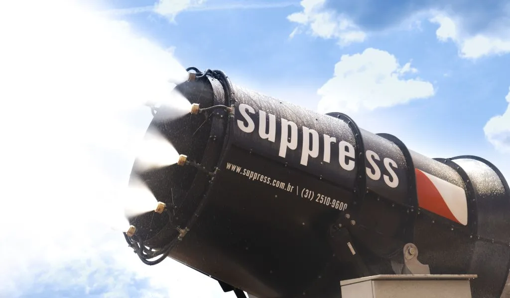

Evaporadores Industriais Suppress: Gestão Sustentável de Efluentes
Tecnologia de evaporação mecanicamente aprimorada para reduzir volumes de água residual com eficiência e responsabilidade ambiental.

Os evaporadores industriais da Suppress utilizam o processo de evaporação mecanicamente aprimorada (MEE), que acelera a transformação de efluentes líquidos em vapor. Por meio de bicos de atomização e ventiladores potentes, os equipamentos criam gotículas finas de água que aumentam a superfície de contato com o ar, acelerando significativamente o processo de evaporação.
São ideais para empresas que lidam com grandes volumes de água residual, oferecendo uma alternativa sustentável e eficiente ao descarte convencional de efluentes, sempre com foco na eficiência e na redução de impactos ambientais.
A gestão de efluentes industriais é um dos temas mais sensíveis da pauta ambiental no Brasil, especialmente após os acidentes com barragens de rejeito que marcaram a última década. A pressão por soluções que efetivamente reduzam o volume de água armazenada em estruturas de contenção, e não apenas monitorem ou reforcem as barragens existentes, tornou os evaporadores uma tecnologia com crescente demanda por parte de mineradoras, siderúrgicas e outros grandes geradores de efluente industrial.
O desafio da gestão de efluentes industriais
Grandes volumes de água residual são um subproduto inevitável de diversos processos industriais, da lavagem de minério à refrigeração de equipamentos. O descarte convencional desse volume, mesmo após tratamento, exige outorgas específicas, monitoramento contínuo de parâmetros de qualidade e, em muitos casos, infraestrutura cara de contenção e tratamento. Quando a geração de efluente supera a capacidade de descarte responsável, a alternativa mais comum é o acúmulo em bacias e barragens, o que traz riscos estruturais e ambientais próprios. A evaporação acelerada surge como uma forma de reduzir esse volume na origem, antes que ele se torne um passivo ambiental de longo prazo.
Como funcionam os evaporadores Suppress
- Atomização da água: pulverizada por bicos de alta pressão em milhões de gotículas por segundo, maximizando a área de evaporação
- Ventilação de alta velocidade: um ventilador de alta potência gera corrente de ar constante, acelerando a evaporação das gotículas
- Controle automático: integração a sistemas de monitoramento climático, ajustando a operação conforme umidade e temperatura
O princípio físico por trás da tecnologia é simples, mas poderoso: quanto menor a gotícula e maior o fluxo de ar ao seu redor, mais rápida é a evaporação. Ao fragmentar a água em milhões de gotículas microscópicas e projetá-las em uma corrente de ar de alta velocidade, o equipamento multiplica exponencialmente a área de superfície exposta em relação a um volume equivalente de água parada em uma bacia de evaporação natural, o que se traduz em ciclos de redução de volume muito mais rápidos do que a evaporação passiva.
Esse mesmo mecanismo de pulverização ultrafina que torna os evaporadores eficazes na gestão de efluentes é a base tecnológica dos canhões de névoa para supressão de poeira da Suppress. A expertise acumulada no projeto de bicos de atomização e no dimensionamento de ventiladores para esse tipo de aplicação é o que permite à Suppress oferecer evaporadores com desempenho consistente mesmo em condições climáticas adversas, como alta umidade relativa do ar, que reduz naturalmente a taxa de evaporação.
Principais benefícios
- Redução do volume de efluentes: é possível evaporar até 50% da água em um único ciclo, reduzindo drasticamente a quantidade que precisa ser tratada ou descartada
- Sustentabilidade: elimina a necessidade de descarte direto no meio ambiente, minimizando o risco de contaminação de rios e lençóis freáticos e alinhando a operação às práticas de ESG
- Flexibilidade e personalização: adaptáveis a diferentes tipos de água e condições climáticas extremas
- Eficiência energética: design focado no uso eficiente de energia, com processo rápido e menor consumo de recursos
Aplicações
- Mineração: redução rápida e sustentável dos grandes volumes de água residual gerados nas operações, incluindo o esvaziamento controlado de barragens de rejeito
- Usinas de energia: eliminação eficaz e controlada do excesso de água utilizada nos processos
- Indústrias de processos químicos e siderurgia: minimização de impactos ambientais e redução de custos com descarte de efluentes
Na mineração, em particular, a gestão de barragens é um dos temas mais sensíveis da operação. O equipamento de maior porte da linha Suppress, o SP-150e, foi desenvolvido especificamente para esse tipo de aplicação de alta vazão, sendo capaz de operar continuamente para acelerar a redução de volume em grandes reservatórios, saiba mais no artigo sobre os impactos ambientais da mineração e o papel da gestão de água nesse contexto.
Vale destacar que o uso de evaporadores para esvaziamento de barragens não elimina a necessidade de monitoramento estrutural e geotécnico das estruturas existentes, mas funciona como uma camada adicional de gestão de risco ao reduzir progressivamente o volume de água acumulado, que é o fator de pressão mais crítico sobre o talude das barragens. Operações que combinam monitoramento contínuo com redução ativa do volume armazenado apresentam um perfil de risco consideravelmente menor do que aquelas que dependem apenas do monitoramento passivo.
Por que escolher os evaporadores Suppress
Desde 2014, a Suppress fornece soluções sustentáveis e inovadoras para diversos setores, com foco em eficiência e redução de impactos ambientais. Entre os diferenciais:
- Produção nacional: equipamentos fabricados no Brasil, atendendo às normas de segurança NR-12
- Personalização: customização para atender necessidades específicas de cada operação
- Assistência técnica especializada: equipe com décadas de experiência no setor
- Alta durabilidade: equipamentos robustos, com baixo custo de manutenção, projetados para operação contínua
Evaporação versus tratamento convencional de efluentes
Diferente de estações de tratamento que removem contaminantes para viabilizar o descarte ou reúso da água, a evaporação mecanicamente aprimorada atua reduzindo o volume total do efluente, concentrando os sólidos remanescentes. Isso não substitui necessariamente o tratamento em todos os casos, mas funciona como uma etapa complementar poderosa: ao reduzir o volume de água que precisa ser tratada ou transportada, a operação reduz proporcionalmente os custos logísticos e de infraestrutura associados à gestão do efluente como um todo, especialmente em locais remotos onde o transporte de grandes volumes de água é caro e logisticamente complexo.
Do ponto de vista regulatório, a redução volumétrica via evaporação pode ser especialmente relevante em operações que operam próximas ao limite de sua outorga de lançamento de efluentes. Ao diminuir o volume que efetivamente precisa ser lançado ou transportado, a empresa ganha margem operacional sem necessariamente ampliar a infraestrutura de tratamento existente, o que representa uma solução mais rápida de implementar e com menor custo de capital do que uma expansão da ETE. Esse argumento de custo-eficiência é recorrente nas avaliações técnicas que comparam evaporação acelerada com tratamento convencional de efluentes em escala industrial.
Os evaporadores industriais da Suppress aliam eficiência operacional à sustentabilidade, eliminando a necessidade de descarte direto no meio ambiente.
Conclusão
Os evaporadores industriais da Suppress são a escolha ideal para empresas que buscam aliar eficiência operacional à sustentabilidade. Com tecnologia avançada e design otimizado, oferecem uma solução econômica e prática para a gestão de efluentes, garantindo que as operações estejam alinhadas com os requisitos ambientais modernos.
A convergência entre eficiência hídrica, responsabilidade ambiental e pressão regulatória torna os evaporadores industriais uma das tecnologias com maior perspectiva de crescimento de adoção no Brasil nos próximos anos. Empresas que antecipam essa tendência e estruturam sua gestão de efluentes com base em tecnologias como a MEE saem na frente tanto na relação com órgãos reguladores quanto nos indicadores de sustentabilidade que orientam investidores e parceiros comerciais. Explore a página de produtos Suppress para conhecer toda a linha de equipamentos disponíveis, incluindo os modelos de alta vazão como o SP-150 e o SP-150e, indicados para as aplicações industriais de maior escala.
Perguntas Frequentes
Quanto volume de água um evaporador industrial Suppress consegue reduzir?
É possível evaporar até 50% da água em um único ciclo de operação, reduzindo de forma significativa o volume de efluente que precisa ser tratado, transportado ou descartado.
Os evaporadores industriais substituem o tratamento convencional de efluentes?
Não necessariamente. A evaporação mecanicamente aprimorada reduz o volume total do efluente e concentra os sólidos remanescentes, funcionando como uma etapa complementar que diminui os custos logísticos e de infraestrutura do tratamento tradicional.
Em quais setores os evaporadores industriais são mais utilizados?
As aplicações mais comuns são mineração, incluindo gestão e esvaziamento de barragens —, usinas de energia e indústrias de processos químicos e siderurgia, todos setores que lidam com grandes volumes de água residual.
Precisa reduzir o volume de efluentes da sua operação?
Fale com nossos engenheiros e conheça os evaporadores industriais Suppress.
Solicitar Proposta